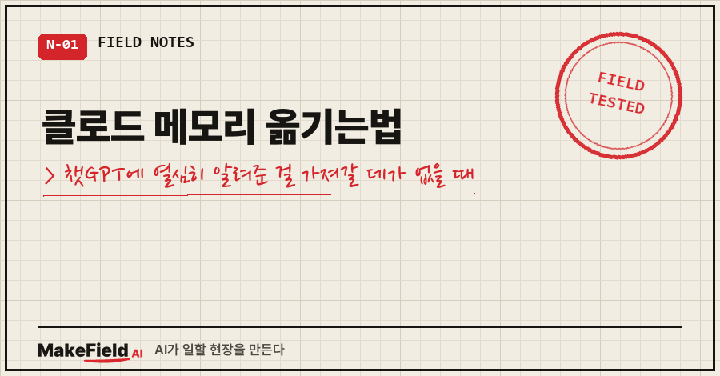
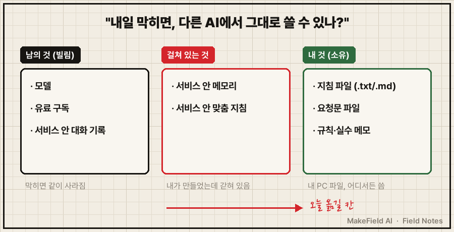
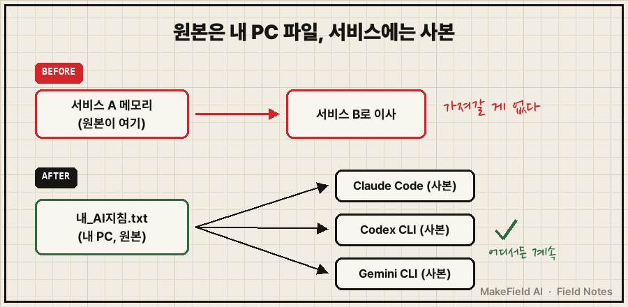
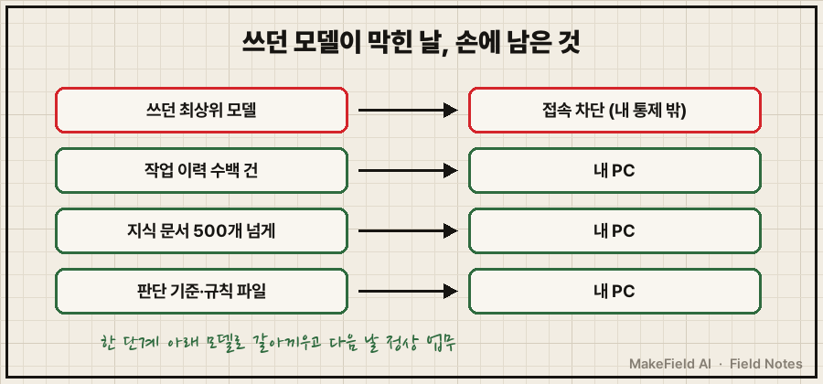

챗GPT 메모리에 제 말투, 보고서 형식, 자주 하는 실수까지 몇 달을 알려줬는데요.
막상 클로드로 옮겨 보려니 손에 쥘 게 하나도 없더라고요.
결론부터 말씀드릴게요. 서비스 안의 메모리는 그 서비스 안에서만 살아요. 다른 AI로 가져가려면 원본을 내 PC의 글자 파일 하나로 두고, 각 서비스에는 그 파일의 사본을 넣어야 합니다. 클로드 메모리 옮기는법을 찾고 계셨다면, 옮기는 요령보다 이 순서를 바꾸는 게 먼저예요.
지난 편에서는 잘 먹힌 요청문을 파일 하나에 모았어요. 이번 편에서는 그 파일을 '내 것'과 '남의 것'으로 갈라 보고, 서비스 안에 갇힌 메모리를 밖으로 꺼냅니다.
저는 15년째 제조 현장에서 설비를 만지는 엔지니어고, 요즘은 그 일의 꽤 많은 부분을 AI 에이전트랑 같이 해요. 이번 얘기는 회사 일이 아니라 집 PC에서 굴리는 개인 AI 이야기입니다.
1. 쓰던 AI가 막힌 날, 왜 일이 안 멈췄나
올해 6월, 돈 내고 쓰던 AI 서비스의 최상위 모델 두 개가 정책 발표 하나로 제가 있는 지역에서 막혔어요. 그 얘기는 예전 글에 자세히 적었으니, 여기선 그날 손에 남은 것만 다시 세어 볼게요.

[쓰던 모델이 막힌 날, 내 손에 남은 것]
쓰던 최상위 모델 : 접속 차단 (내 통제 밖)
작업 이력 : 수백 건 (내 PC)
지식 문서 : 500개 넘게 (내 PC)
판단 기준·규칙 파일 : 그대로 (내 PC)
→ 한 단계 아래 모델로 갈아끼우고, 다음 날 정상 업무모델만 남의 것이었고 나머지는 전부 제 컴퓨터에 파일로 있었어요. 그래서 다른 모델을 꽂고 그 위에 파일을 올리니 일이 이어졌습니다. 그때 정리된 문장이 이거예요.
모델은 빌리는 것, 데이터와 판단은 소유하는 것.
그런데 한 번으로 끝나지 않더라고요.
지난 10월엔 대화 도중 답변이 서비스 쪽 안전 필터에 중간에 잘렸어요.
"제약이 쓸데없이 많다"는 생각이 들어서, 11월부터는 다른 회사 AI의 최고 요금제를 같이 써 보고 어느 쪽을 주력으로 할지 정하기로 했습니다.
이렇게 갈아탈지 말지 고민이라도 할 수 있는 건, 제 쪽에 쌓아 둔 게 서비스 안이 아니라 파일로 있어서예요.
2. 내 AI 자산, 세 칸으로 갈라 보기
이 장에서 만들 건 내 AI 사용을 '남의 것 / 걸쳐 있는 것 / 내 것' 세 칸으로 가른 구분표 한 장이에요. 기준은 질문 하나입니다. "이 서비스가 내일 막히면, 이걸 다른 AI에서 그대로 쓸 수 있나?"

| 구분 | 기준 | 예시 |
|---|---|---|
| 남의 것(빌림) | 서비스가 막히면 같이 사라지거나 못 씀 | 모델, 유료 구독, 서비스 안 대화 기록 |
| 걸쳐 있는 것 | 내가 만들었지만 서비스 안에 갇혀 있음 | 서비스 안 메모리, 맞춤 지침 |
| 내 것(소유) | 내 PC 파일이라 어디서든 씀 | 지침 파일, 요청문 파일, 규칙·실수 메모 |
제일 위험한 건 가운데 칸이에요. 공은 내가 들였는데 열쇠는 남이 쥐고 있거든요.
그리고 여기서 말하는 '내 것'은 회사 보고서나 거래처 자료가 아니에요. 그건 내 PC에 있어도 회사 거죠. 제가 말하는 건 일하는 방식, 판단 기준, 같은 걸 다시 만드는 절차, 이 세 가지입니다.
3. 따라하기: 메모리를 파일로 옮기는 4단계
1단계. 지금 쓰는 서비스의 메모리·맞춤 지침을 전부 복사해요.
서비스 설정 화면에서 '메모리'나 '맞춤 지침(사용자 지침)' 항목을 찾아 내용을 통째로 복사합니다. 메뉴 이름과 위치는 서비스마다 다르고 자주 바뀌니, 설정 안에서 그 두 단어를 찾으시면 돼요.
2단계. 메모장에 붙여 넣고 내_AI지침.txt로 저장해요.
저장 위치는 딱 한 곳으로 정합니다. 저는 AI 작업용 폴더 하나를 따로 두고 거기에만 모아요.
내AI/
├─ 내_AI지침.txt ← 서비스 메모리에서 꺼낸 내용 (원본)
├─ 요청문_모음.md ← 지난 편에서 만든 파일
└─ 실수_기록.md ← AI가 반복해서 틀린 것3단계. 새 AI에 그 파일을 읽혀요.
Claude Code라면 폴더에서 이렇게 시작합니다.
cd 내AI
claude
> 내_AI지침.txt를 읽고, 같은 내용으로 이 폴더에 CLAUDE.md를 만들어줘.
앞으로 이 폴더에서는 이 지침대로 일하고, 지침에 없는 건 추측하지 말고 물어봐.CLAUDE.md는 Claude Code가 그 폴더에서 시작할 때마다 알아서 읽는 파일이에요(Claude Code 공식 문서 memory 항목, code.claude.com/docs/en/memory). GPT 쪽 Codex CLI는 AGENTS.md, Gemini CLI는 GEMINI.md라는 이름으로 같은 역할을 해서, 같은 내용을 파일 이름만 바꿔 두면 셋 다 똑같이 됩니다.
확인 방법: 창을 닫고 새로 연 다음 "내 보고서 형식 규칙이 뭐야?"라고 물어보세요. 파일에 적은 대로 답하면 성공이에요.
4단계. 구분표를 채워요.
[내 AI 자산 구분표 — 2026-11-( )]
남의 것 : 쓰는 서비스 ( ) 막히면 대체할 곳 ( )
걸쳐 있는 것 → 오늘 옮김 : 서비스 메모리 → 내_AI지침.txt
내 것 : 지침 파일 ( )개 / 요청문 ( )개 / 저장 위치 ( )'막히면 대체할 곳'은 비워 두지 마세요. 다른 AI 이름 하나면 충분하고, 안 써 봤다면 무료 버전으로 한 번만 열어 보시면 됩니다.

4. 여기서 이렇게 틀립니다: 서비스 안에 쌓으면 쌓인 줄 알아요
증상은 이거예요. 메모리 기능에 내 정보를 열심히 알려줬는데, 다른 AI로 옮기려니 가져갈 게 없습니다.
원인은 서비스 안의 메모리가 밖으로 들고 나오기 어렵게 생겼다는 거고요.
이렇게 합니다. 중요한 건 내 PC 파일에 먼저 적고, 서비스에는 그 파일을 넣어 줍니다. 원본은 내 쪽, 서비스엔 사본이에요.
저도 이걸 알면서 한 번 더 걸렸어요..
같은 Claude Code인데 컴퓨터만 윈도우에서 맥북으로 바꿨더니, 윈도우에서 몇 번이나 "그건 내 환경에 없는 기능"이라고 설명해 둔 걸 맥 쪽 AI가 또 권하더라고요. 그날 제가 친 말이 "몇 번을 더 설명해야 하나"였습니다.
원인은 AI가 스스로 적는 메모리가 컴퓨터마다 따로 저장된다는 거였어요. 지금 윈도우 쪽에만 메모리 파일이 268개 쌓여 있는데, 이건 맥으로 안 넘어갑니다. 그래서 두 대가 다 알아야 하는 규칙은 동기화 폴더 안의 CLAUDE.md로 옮겼어요. 자세한 과정은 10월 말에 쓴 'Claude Code 맥 윈도우 같이 쓸 때' 글에 적어 뒀습니다.
서비스를 바꾸든 컴퓨터를 바꾸든 결론은 같았어요. 원본이 어디 있느냐가 이사 가능 여부를 정합니다.
자주 묻는 질문
Q. 클로드 메모리 옮기는법, 서비스끼리 바로 옮겨 주는 기능은 없나요?
서비스마다 가져오기 기능이 생기기도 하고 바뀌기도 해요. 그런 기능이 있어도 원본을 내 파일로 하나 들고 있으면, 그 기능이 사라지거나 세 번째 서비스로 갈 때도 그대로 씁니다.
Q. 끊기는 게 무서운데, 아예 AI를 내 PC에 설치해야 하나요?
저도 맥북에 오픈모델을 올려 돌려 봤는데, 가장 좋은 성능은 여전히 빌려 쓰는 쪽에 있어요. 모델은 마음 편히 빌리고, 기록과 판단 기준만 내 쪽에 두면 어떤 모델이 막혀도 다른 데 꽂아 계속 일할 수 있습니다.
Q. 챗GPT 메모리는 그럼 꺼야 하나요?
안 꺼도 돼요. 편하게 쓰되 거기 쌓인 내용을 가끔 내 파일로 옮겨 적으면 됩니다. 원본과 사본의 순서만 지키면 돼요.
지금 쓰는 AI가 내일 아침 막히면, 여러분 일은 며칠 버틸 수 있나요?
다음 편에선 이렇게 모은 파일을 매번 붙여 넣지 않고 AI가 직접 읽게 하는 첫걸음, 터미널을 딱 필요한 만큼만 다룰게요.
이 글은 『직장인의 AI 오답 노트』 0-4장을 블로그용으로 다시 쓴 것입니다. 같은 증상의 원인과 점검표 전체는 책에 있어요. 종이책 예스24 https://www.yes24.com/product/goods/198006547 · 종이책 알라딘 https://www.aladin.co.kr/shop/wproduct.aspx?ItemId=404397482 · 전자책 예스24 https://www.yes24.com/product/goods/197975471